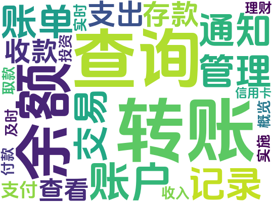

Demographic Data
User age
Under 18: 1 user
18-24: 4 users
25-34: 3 users
35-44: 1 user
45-54: 1 user
55-64: 0 users
65+: 0 users
Employment Status
Employed: 4 users
Unemployed: 1 user
Student: 3 users
Retired: 1 user
Other (please specify): 1 user
Frequency of users using banking apps
Rarely: 1 user
Occasionally: 2 users
Regularly: 2 users
Daily: 5 users
Consider the importance of UI
Very Important: 3 users
Important: 3 users
Neutral: 3 users
Not Important: 1 user
Very Unimportant: 0 users
important Security features
Double Factor Authentication: Mentioned by 4 users
Data Encryption: Mentioned by 2 users
Real-time Transaction Notifications: Mentioned by 1 user
Limiting High-risk or Abnormal Transactions: Mentioned by 1 user
Device Authorization Management: Mentioned by 1 user
User gender
Male: 5 users
Female: 3 users
Non-binary: 0 users
Prefer not to say: 0 users
Other (please specify): 2 users
User Education Level
High School or less: 2 user
Some College or Associate's Degree: 2 user
Bachelor's Degree: 5 users
Master's Degree or higher: 1 users
The three most important app features
Account Balance Inquiry
Transfer Functionality
Transaction Record Viewing
Satisfaction with the current app
Very Satisfied: 2 users
Satisfied: 4 users
Neutral: 2 users
Unsatisfied: 1 user
Very Unsatisfied: 1 user
Suggestions for Security Enhancement
Providing clear privacy policies and terms (mentioned by 2 users)
Proactively notifying users about security vulnerabilities and updates (mentioned by 2 users)
Strengthening user authentication processes (mentioned by 3 users)
Implementing device fingerprint technology and behavior analysis algorithms (mentioned by 1 user)
visualization
用户年龄分布
用户教育程度比例
用户移动银行APP使用频率
用户对新APP态度的相关调查
用户性别比例
用户就业状况
用户对移动银行应用信任度和年龄关系
用户认为重要的银行APP功能
findings
从收集到的数据以及所作的相应可视化后，我们得出了以下一些发现：
- 大多数用户的年龄在 18 至 34 岁之间，受教育程度和就业状况各不相同。
- 用户使用手机银行应用程序的频率各不相同，相当一部分用户每天都使用该应用程序。
- 用户普遍重视账户余额查询、转账功能和交易记录查看等主要功能
- 用户友好的界面对大多数人来说都很重要，但对这方面的重视程度存在一定差异。
- 用户似乎对目前的手机银行应用程序相当满意，但仍有改进的余地。
- 双因素身份验证和数据加密等安全功能受到用户的高度重视。
- 用户对手机银行应用程序的信任度普遍处于中上水平，平均信任度为 3.6
- 用户对生物识别身份验证方法的满意度普遍较高。
- 相当一部分用户表示，如果某个手机银行应用程序得到了信誉良好的金融机构或银行的认可或与之合作，他们会更倾向于使用该应用程序。
根据我们收集得到的survey数据所示，潜在用户在调研过程中强调了安全性、用户友好的UI界面和建立信任措施在开发成功的手机银行应用程序中的重要性。 此外，根据我们对不同年龄段潜在用户的调研发现，在应用开发的过程中，还必须考虑到从青年学生到退休人员等用户群的不同偏好和需求，比如年轻用户更注重于 应用的便捷性，年老的用户更注重于应用的安全可靠性，综合考虑不同年龄段的用户需求，以创建一个全面、包容的应用程序。